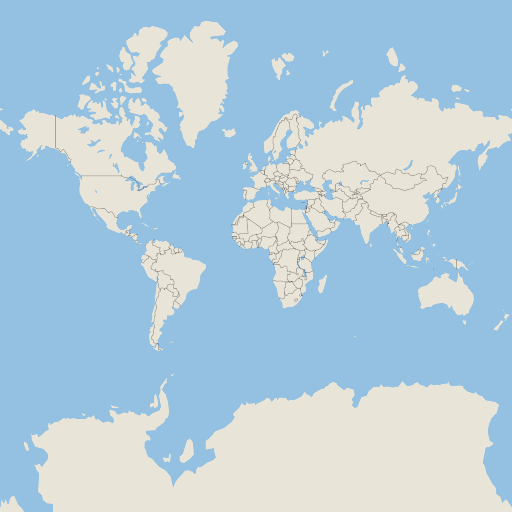

Building with Microsoft Visual Studio
Prerequisites
The build was tested with Microsoft Visual Studio 2022. Earlier versions are not guaranteed to work, but Microsoft Visual Studio 2019 might work as well.
To install the required Visual Studio components, open Visual Studio Installer and check Desktop Development with C++ option. Make sure C++ CMake tools for Windows is selected in the right pane. If git is not already installed, select Git for Windows option in Individual Components. When Visual Studio finishes the install process, everything is ready to start.
Downloading sources
Open x64 Native Tools Command Prompt for VS 2022 and then clone the repository:
git clone --config core.longpaths=true --depth 1 --recurse-submodules -j8 https://github.com/maplibre/maplibre-native.git
cd maplibre-native
note
The core.longpaths=true config is necessary, because without it a lot of Filename too long messages will come. If you have this configuration set globally (git config --system core.longpaths=true), you can omit the --config core.longpaths=true portion of the clone command.
Configuring
Configure the build with the following command, replacing <preset> with opengl, egl or vulkan, which are the rendering engines you can use. If you don't know which one to choose, just use opengl:
cmake --preset windows-<preset>
It will take some time to build and install all components on which Maplibre depends.
Building
Finally, build the project with the following command, again replacing <preset> with the value you choose in the configure step:
cmake --build build-windows-<preset>
Building with Microsoft Visual Studio
Just add the -G "Microsoft Visual Studio 17 2022" (or the corresponding Visual Studio version you have) option from the configure command:
cmake --preset windows-<preset> -G "Microsoft Windows 2022"
Once configure is done, open the file build-windows-<preset>\Mapbox GL Native.sln. Build the target ALL_BUILD to build all targets, or pick a specific target. Don't forget to pick a build configuration (Release, RelWithDebInfo, MinSizeRel or Debug), otherwise the project will be built with default configuration (Debug).
Testing
If all went well and target mbgl-render or ALL_BUILD was chosen, there should now be a build-windows-<preset>\bin\mbgl-render.exe binary that you can run to generate map tile images. To test that it is working properly, run the following command.
.\build-windows-<preset>\bin\mbgl-render.exe --style https://raw.githubusercontent.com/maplibre/demotiles/gh-pages/style.json --output out.png
This should produce an out.png map tile image with the default MapLibre styling from the MapLibre demo.

Using your own style/tiles
You can also use the mbgl-render command to render images from your own style or tile set. To do so, you will need a data source and a style JSON file.
For the purposes of this exercise, you can use the zurich_switzerland.mbtiles from here, and the following style.json file.
{
"version": 8,
"name": "Test style",
"center": [
8.54806714892635,
47.37180823552663
],
"sources": {
"test": {
"type": "vector",
"url": "mbtiles:///path/to/zurich_switzerland.mbtiles"
}
},
"layers": [
{
"id": "background",
"type": "background",
"paint": {
"background-color": "hsl(47, 26%, 88%)"
}
},
{
"id": "water",
"type": "fill",
"source": "test",
"source-layer": "water",
"filter": [
"==",
"$type",
"Polygon"
],
"paint": {
"fill-color": "hsl(205, 56%, 73%)"
}
},
{
"id": "admin_country",
"type": "line",
"source": "test",
"source-layer": "boundary",
"filter": [
"all",
[
"<=",
"admin_level",
2
],
[
"==",
"$type",
"LineString"
]
],
"layout": {
"line-cap": "round",
"line-join": "round"
},
"paint": {
"line-color": "hsla(0, 8%, 22%, 0.51)",
"line-width": {
"base": 1.3,
"stops": [
[
3,
0.5
],
[
22,
15
]
]
}
}
}
]
}
Note that this style is totally inadequate for any real use beyond testing your custom setup. Don't forget to replace the source URL "mbtiles:///path/to/zurich_switzerland.mbtiles" with the actual path to your mbtiles file.
From your maplibre-native dir, run the following command.
.\build-windows-<preset>\bin\mbgl-render.exe --style path\to\style.json --output out.png
This should produce an out.png image in your current directory with a barebones image of the world.
